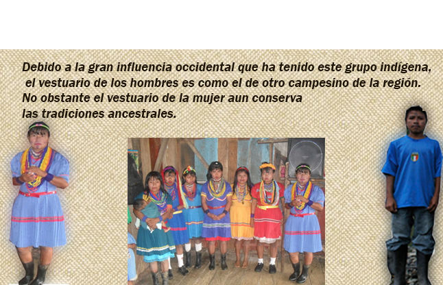

En los eventos se utilizan atuendos especiales para participar en algunas presentaciones o ceremonias programadas durante el año en algunos sitios de su región. En ello la mujer Embera utiliza un traje especial llamado en su idioma Paru Wuera (vestido tradicional) y para utilizar en los bailes y ceremonias de Jaibana y el hombre utiliza un traje tradicional como taparrabo, esto es para cubrir su parte genital de su cuerpo, el hombre utiliza en su rostro pinturas faciales, y tanto los hombres como las mujeres utilizan en sus antebrazos y brazos pinturas en figuras geométricas las cuales identifican los símbolos que su cultura posee, también se tienen en cuenta los tejidos artesanales para con ello demostrar un conjunto de manifestaciones de su propia cultura.